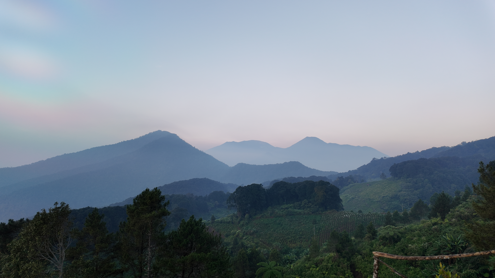

LANDSCAPE
01PHOTOGRAPHY · VIDEOGRAPHY · EDITING
Moments pass.
Stories stay.
Merekam cerita, suasana, dan detail kecil yang layak untuk diingat — dari puncak gunung sampai panggung acara.

01 / LANDSCAPECaptured with curiosity.
K
✳
✳
0Selected works
0Kategori karya
0Kamera utama
∞Rasa ingin tahu
SELECTED WORKS
A few things I've captured.
Beberapa momen favorit dari perjalanan, event, dan kegiatan komunitas. Klik foto untuk melihat versi besar.
PGTI CUP
02UNION CUP
CHURCH
03Special Activity
CHURCH
04Faith Singer | GKII
LANDSCAPE
05Into the Wild
PGTI CUP
06Closing Gathering
Belum ada foto di kategori ini.
WHAT I DO
Layanan yang bisa saya bantu.
Dari satu momen kecil sampai dokumentasi acara penuh — dibuat rapi dan bercerita.
Photography
Foto lanskap, potret candid, dan suasana acara dengan pencahayaan alami dan komposisi yang jujur.
Videography
Video pendek, highlight, dan cuplikan perjalanan yang direkam stabil dan sinematik.
Event Documentation
Dokumentasi kegiatan gereja, turnamen, dan acara komunitas — dari persiapan sampai foto bersama.
Creative Editing
Color grading, retouch ringan, dan penyuntingan video agar hasil akhir konsisten dan siap dibagikan.
HOW IT WORKS
Dari ide sampai hasil akhir.
- 1
Ngobrol
Kita bahas tujuan, suasana, dan kebutuhan project kamu.
- 2
Rencana
Menentukan jadwal, lokasi, dan shot list yang penting.
- 3
Shooting
Merekam momen dengan tenang dan peka terhadap detail kecil.
- 4
Editing
Seleksi, color grading, dan penyuntingan sampai siap dikirim.
K.
A LITTLE ABOUT ME
Hi, I'm Kenneth.
I tell stories visually.
Halo, saya Kenneth, seorang kreator visual yang memiliki ketertarikan besar dalam dunia photography, videography, dan editing. Saya menikmati proses mengabadikan momen, menciptakan cerita melalui visual, serta mengubah ide menjadi karya yang menarik dan bermakna.
Bagi saya, setiap foto dan video memiliki cerita yang unik. Melalui kreativitas, ketelitian, dan semangat untuk terus belajar, saya berusaha menghasilkan karya yang tidak hanya terlihat baik secara visual, tetapi juga mampu menyampaikan pesan kepada audiens.
Selain aktif dalam bidang media kreatif, saya juga memiliki pengalaman dalam mengelola proyek dan bekerja sama dalam tim melalui berbagai kegiatan organisasi dan komunitas.
Let's create something ↗FOCUS
Photography
Videography
Event Documentation
TOOLS
Canon 750D
DJI Osmo Pocket 3
Creative Editing
VALUES
Kreatif · Teliti
Terus belajar
Kerja sama tim
HAVE A PROJECT IN MIND?
Let's make something
meaningful.
Terbuka untuk kolaborasi, dokumentasi acara, dan project kreatif.
Atau langsung email: kennethfredericckkk3@gmail.com